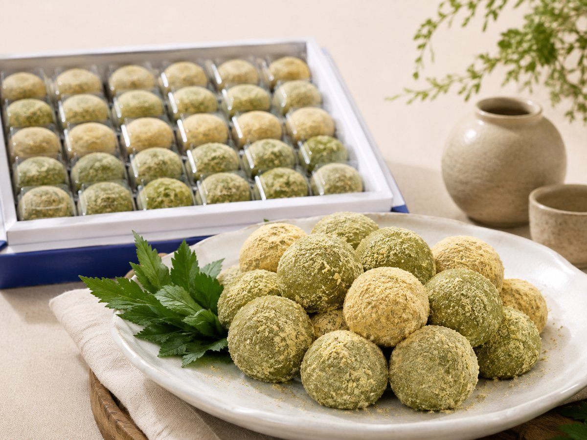

승검초단자는 당귀잎과 찹쌀로 빚어 잣가루를 묻혀 완성하는 전통 떡입니다. 대한민국 식품명인 제52호 이연순 명인이 직접 만드는 대표 품목입니다.

승검초는 무엇인가
승검초는 당귀의 잎을 부르는 옛 이름입니다. 승검초단자라는 이름 자체가 당귀잎으로 만든 단자라는 뜻입니다.
많은 분이 초록빛을 보고 쑥떡으로 오해하십니다. 승검초단자에는 쑥이 들어가지 않습니다. 당귀잎 특유의 향이 쑥과 다르기 때문에, 드셔보시면 차이를 바로 느끼실 수 있습니다.
고물은 콩가루가 아니라 잣가루
단자는 찹쌀떡에 고물을 묻혀 완성하는 떡입니다. 승검초단자는 고물로 잣가루를 씁니다. 흔히 쓰는 콩가루가 아닙니다.
잣가루는 콩가루보다 기름지고 고소한 맛이 진합니다. 당귀잎의 향과 함께 어우러져 승검초단자 특유의 맛을 만듭니다.
구성과 가격
승검초단자는 냉동 상태로 보관하며, 낱개와 선물세트로 나뉩니다.
| 구성 | 가격 |
|---|---|
| 낱개 1개 | 2,000원 |
| 10구 | 20,000원 |
| 20구 (혼합) | 40,000원 |
| 30구 | 60,000원 |
20구 혼합 구성에는 당귀·황기·구기자·아로니아 네 가지가 들어갑니다. 색이 각각 달라 선물용으로 많이 찾으십니다.
어떤 재료로 만드나
- 당귀잎(승검초) — 제천 한방 특산물
- 국내산 찹쌀 100%
- 잣가루 — 마무리 고물
제천은 한방 약초로 알려진 고장입니다. 이연순 명인은 이 지역 원료를 활용해 떡을 만들어 왔습니다.
자주 묻는 질문
승검초단자에 쑥이 들어가나요?
들어가지 않습니다. 쑥이 아닌 당귀잎(승검초)이 들어갑니다.
고물은 콩가루인가요?
아닙니다. 잣가루를 묻혀 완성합니다.
온라인으로 살 수 있나요?
네, 네이버 스마트스토어에서 주문하시면 전국 택배로 받아보실 수 있습니다.
보관은 어떻게 하나요?
냉동 보관 상품입니다. 드시는 방법은 전화로 문의해 주세요.